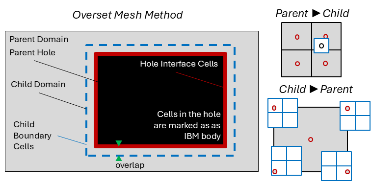

Overset Mesh
Overset mesh allows to introduce refinement levels within TOSCA. In this technique, a finer mesh is immersed inside the original background mesh. Boundary conditions for the finer mesh are interpolated from the background mesh, while cells in the background mesh are blanked when they overlap with the finer mesh. This “hole” is the background mesh is treated as an IBM body (see IBM), where the solution at the IBM fluid cells is interpolated from the finer mesh. In order to understand how the overset mesh method works in TOSCA, it is worth mentioning some nomenclature used in relation to the following figure:
{kind=link}
A parent domain is a domain that fully contains another domain, usually characterized by a finer mesh, referred to as the child domain. Since the parent encloses the child, a hole can be created, a few cells inwardly offset from the child, where parent domain cells are not solved. This is referred to as the parent hole, which is treated as an IBM body. Hole interface cells are IBM fluid cells where the solution is interpolated from the child domain. Vice versa, the solution is interpolated from the parent domain at the child boundary cells. The offset between the hole and the child domain is required in order to use centered interpolation stencils when interpolating from the parent to the child domain. Finally, donor and acceptor cells are those cells that provide and receive the interpolaton data, respectively. Parent and child domains have both donor and acceptor cells, depending if the interpolation is from parent to child or vice versa. Regarding the interpolation, when this goes from parent to child (coarse to file), a tri-linear scheme is used. Conversely, when going from child to parent (fine to coarse), a tri-linear scheme would make the interpolated value too local if the parent to child grid ration is too large. For this reason, TOSCA introduces a tri-linear averaged interpolation, where cell corners are first tri-linearly interpolated and then averaged to yield the cell value, as shown in the figure above.
In order to activate the overset mesh method in TOSCA, the first thing to do is to activate the -overset flag in the control.dat file.
This prompts TOSCA to read the oversetInput.dat file, located inside the overset directory. This file contains entires that are
used to define multiple domains and their mutual hierarchy. When overset is active, TOSCA’s case structure changes slightly, as one extra level
of directory is added. In fact, assuming that two domains are defined, named background and overset, the minimal case structure becomes:
case_directory
├── control.dat
├── background.xyz
├── overset.xyz
├── boundary
│ ├── background
│ │ ├── U
│ │ └── nut
│ └── overset
│ ├── U
│ └── nut
├── overset
│ └── oversetInput.dat
└── IBM
└── hole
Notably, additional domains can be defined, which will change the directory structure accordingly. There should be a hole body for each child domain, and as many mesh files and boundary sub-directories as many domains are defined. Finally, a parent domain can have multiple child domains, but a child domain can only have one parent domain.
oversetInput.dat
The oversetInput.dat file defines the hierarchy of the domains, their mesh files and their hole bodies. We show below the syntax of the file for the example provided in the TOSCA repository inside tests/multiDomainOverset. In this example, four domains are defined. An outer domain, with two child domains, and an additional child domain in one of the previous child domains.
# TOSCA Input file - Overset Input Properties
# -------------------------------------------
MeshTotal 4 // integer, total number of meshes
numHoleObjects 3 // integer, number of hole objects
dynamicOverset 0 // (not supported yet) 1 if the overset mesh is moving
Mesh0
{
name outer // string, name of the domain
parentMesh (-1) // integer, -1 if parent is the background domain
childMesh (1 3) // list of child meshes, -1 if no child
windPlant 0 // 1 if the domain contains wind turbines
ibm 0 // 1 if the domain contains an IBM body
}
Mesh1
{
name inner1 // string, name of the domain
parentMesh (0) // integer, -1 if parent is the background domain
childMesh (2) // list of child meshes, -1 if no child
windPlant 0 // 1 if the domain contains wind turbines
ibm 0 // 1 if the domain contains an IBM body
}
Mesh2
{
name inner2 // string, name of the domain
parentMesh (1) // integer, -1 if parent is the background domain
childMesh (-1) // list of child meshes, -1 if no child
windPlant 0 // 1 if the domain contains wind turbines
ibm 1 // 0 if the domain doesn't contain an IBM body
}
Mesh3
{
name inner3 // string, name of the domain
parentMesh (0) // integer, -1 if parent is the background domain
childMesh (-1) // list of child meshes, -1 if no child
windPlant 0 // 1 if the domain contains wind turbines
ibm 0 // 1 if the domain contains an IBM body
}
holeObject0
{
bodyNamr outerHole1 // string, name of the hole body
ownerMesh 0 // integer, index of the parent domain
donorMesh 1 // integer, index of the child domain
bodyType closedBody // string, see IBM
fileType ucd // string, see IBM
baseLocation (0.0 0.0 0.0) // vector, see IBM
searchCellRatio 3 // integer, see IBM
}
holeObject1
{
bodyNamr outerHole2 // string, name of the hole body
ownerMesh 0 // integer, index of the parent domain
donorMesh 3 // integer, index of the child domain
bodyType closedBody // string, see IBM
fileType ucd // string, see IBM
baseLocation (0.0 0.0 0.0) // vector, see IBM
searchCellRatio 3 // integer, see IBM
}
holeObject2
{
bodyNamr outerHole3 // string, name of the hole body
ownerMesh 1 // integer, index of the parent domain
donorMesh 2 // integer, index of the child domain
bodyType closedBody // string, see IBM
fileType ucd // string, see IBM
baseLocation (0.0 0.0 0.0) // vector, see IBM
searchCellRatio 3 // integer, see IBM
}
Notably, the name of the mesh objects should be the name of the mesh files without the extension. For example, if the mesh file is background.xyz, the name of the mesh in the oversetInput.dat file should be background. The same applies to the hole bodies, as they will be looked for inside the IBM directory. Currently, wind turbines can be defined inside more than one overset domain, as TOSCA expects domain-specific directories turbines/meshName for each domain, where the file structure described in turbines should be followed. This is not true for the IBM, as TOSCA does not make this distinction. Hence, IBM can only be activated in one domain and the directory structure described in IBM should be followed (with the addition of the hole objects).
Boundary conditions for the overset mesh are defined in the same way as for a normal simulation, except that the boundary condition files should be placed inside the boundary/meshName sub-directory, as they are domain-specific. For child domains, at the boundary where one wants to interpolate from the parent domain, the boundary condition should be set to oversetInterpolate. Notably, not all boundaries always have to be interpolated from the parent domain. For example, if the bottom boundary of the child domain is a wall, the boundary condition should be set to noSlip, or a wall model should be used. Interpolation at the hole interface cells is done automatically by TOSCA, so no boundary condition is needed for those cells.